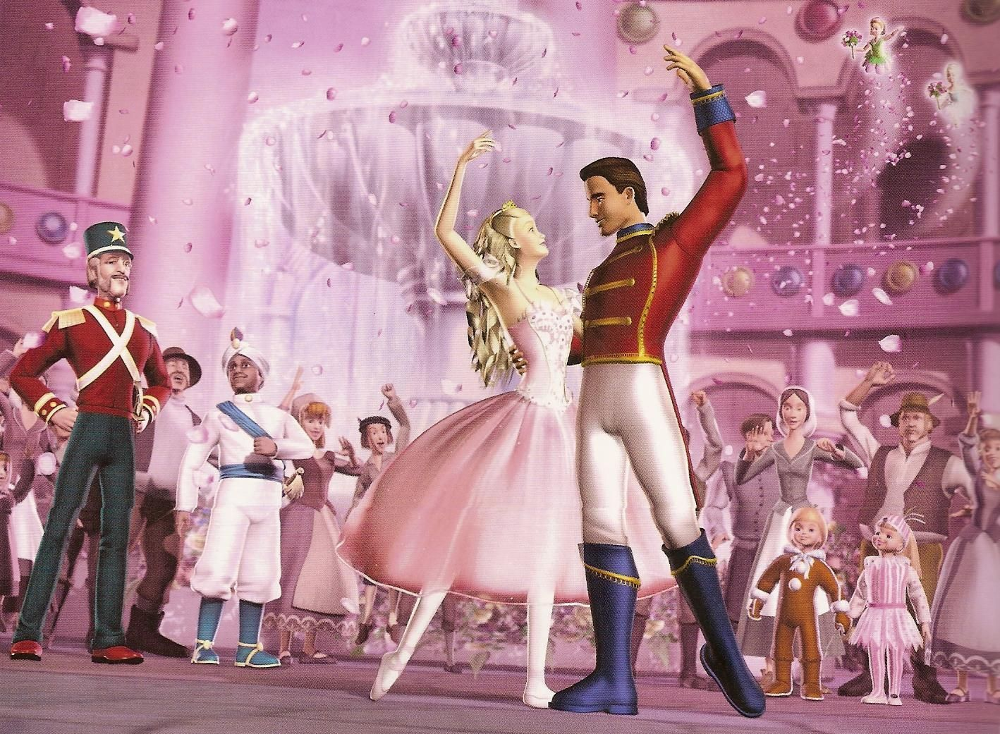

Kelahiran
Puteri mungil nan cantik lahir pada tanggal 23 Mei 2000 dengan nama yang sangat berarti dan berupa doa dari orangtuanya,Jemi Yantika Damanik. "Jemi" yang merupakan nama sahabat baik ayah tercinta dan "Damanik" merupakan nama belakang sang ayah. Dilahirkan oleh seorang wanita kuat yang tak seorang pun dapat menandinginya. Adapun website ini dapat terwujud adalah karena doa dan dukungan sang wanita kuat tersebut.
Masa Kecil

Dibesarkan hingga berumur delapan tahun di kota balige dengan nuansa perkampungan dan solidaritas persaudaraan yang tinggi. Ia mempunyai banyak teman masa kecil dan hobby yang cukup langka di kalangan puteri kecil zaman milenial. Ia menyukai pohon(untuk dipanjat dan tidur di rantingnya), kelereng, gambaran dan berbagai jenis permainan bola. Ia tidak menyukai permainan puteri seperti pada umumnya baik itu lompat tali, masak-masak, dan saling berdandan. Sangat membenci suara berisik, baik karena hiruk pikuk kehidupan manusia ataupun hujan yang turun. Satu yang unik dalam diri gadis tomboy ini adalah kecintaannya terhadap Barbie. Itu sebabnya ia membuat website ini dengan beberapa gambar dan tema barbie.
Masa Remaja
Saat berusia 11 tahun hingga saat ini, ia tinggal di kabupaten Simalungun. Saat remaja, Jemi bertumbuh menjadi gadis yang anggun dengan rasa penasaran yang tinggi. Pernah bercita-cita menjadi guru karena kesukaannya terhadap pengetahuan(baik itu membaca ataupun menulis), menjadi dokter(karena menginginkan kesembuhan terhadap keluarganya yang sakit di masa silam), menjadi peneliti(sekali lagi, karena kecintaannya pada pengetahuan) , dan saat ini ingin menjadi seorang programmer(tuntutan jurusan kuliah, harapan orangtua, dan semoga menjadi kehendak Tuhan)